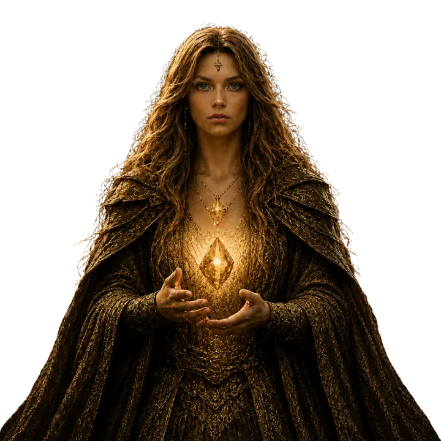
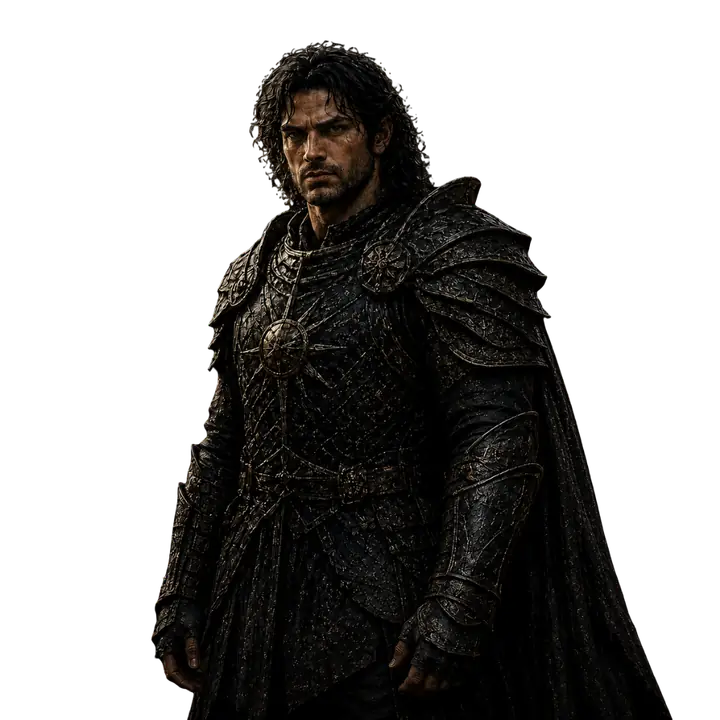
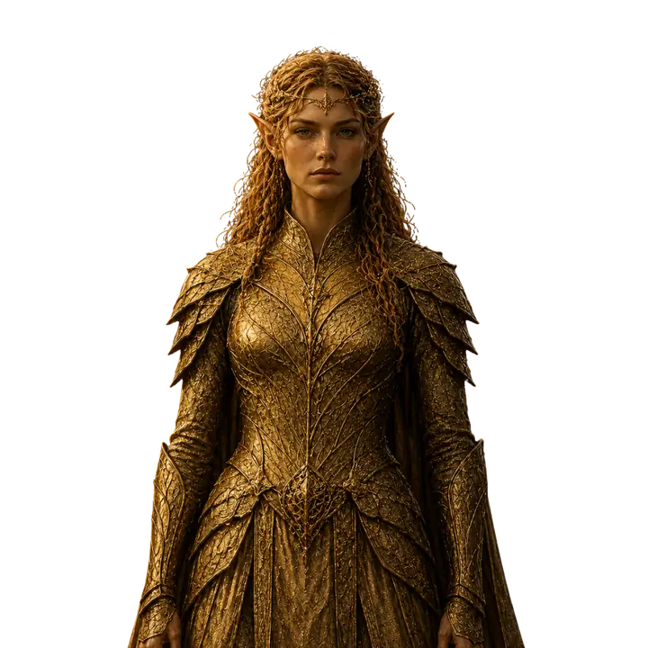
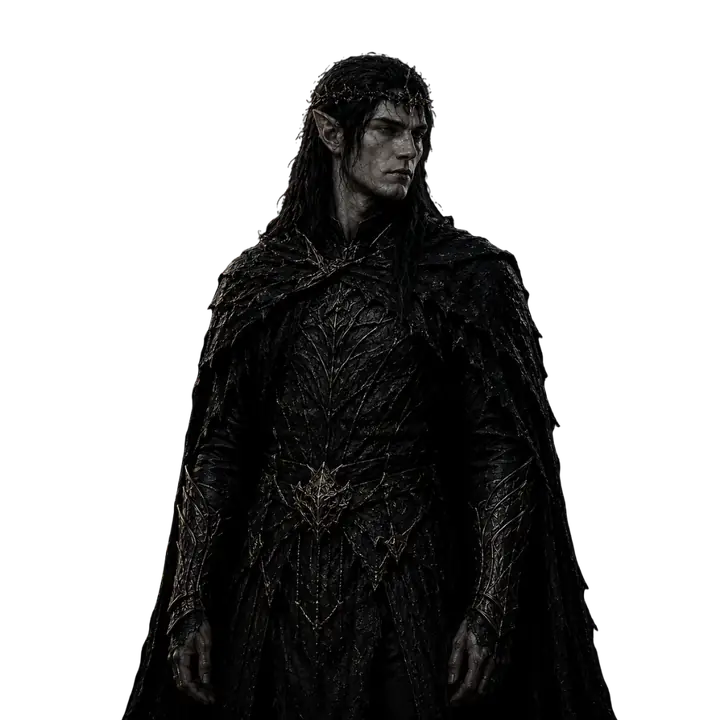
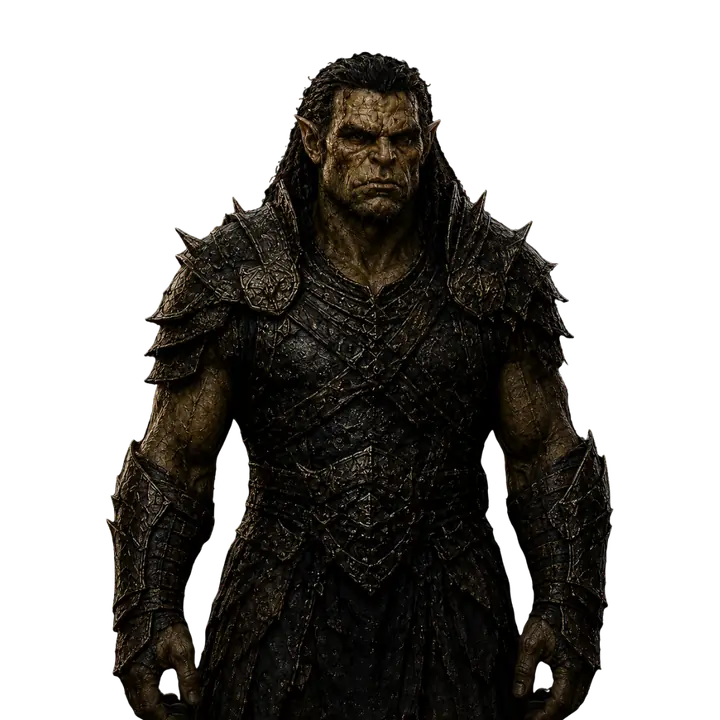
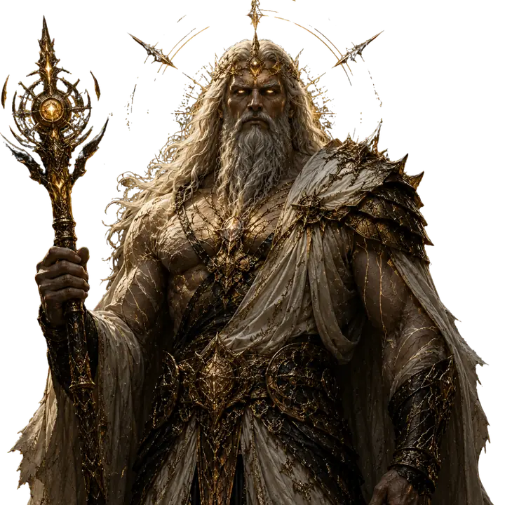
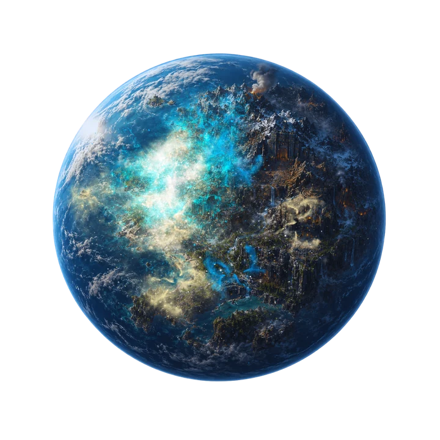

Εγκυκλοπαίδεια του Κόσμου
Τι θέλεις να ανακαλύψεις;
Αναζήτησε θεούς, φυλές, πλανήτες και έννοιες ή ξεκίνησε από μία από τις βασικές κατηγορίες του lore.
Η επίσημη εγκυκλοπαίδεια του Κόσμου των Νάνων για fans και νέους αναγνώστες. Γνώρισε τους θεούς, τις φυλές, τους πλανήτες, τις θεϊκές έννοιες και την ιστορία του γαλαξία χωρίς να χαλάσεις την εμπειρία της ανάγνωσης.
Αναζήτησε θεούς, φυλές, πλανήτες και έννοιες ή ξεκίνησε από μία από τις βασικές κατηγορίες του lore.
Στην αρχαιότερη παράδοση του γαλαξία, η δημιουργία δεν περιγράφεται ως μια απλή στιγμή γέννησης, αλλά ως πράξη ισορροπίας. Οι κόσμοι, οι φυλές και οι θεοί δεν εμφανίστηκαν για να κυριαρχήσουν ο ένας πάνω στον άλλο, αλλά για να κρατούν διαφορετικές δυνάμεις σε συνεχή σχέση.
Ο Τιτάνας θεωρείται ο πατέρας αυτής της τάξης. Από εκείνον ξεκινά η θεϊκή γενεαλογία και γύρω από τη βούλησή του οργανώθηκε το πρώτο κοσμικό σύστημα. Κάθε θεός έλαβε έναν λαό, έναν ρόλο και μια ευθύνη, όχι μόνο εξουσία.
Οι θνητοί λαοί δεν ήταν παθητικά δημιουργήματα. Η ύπαρξή τους έδινε στους θεούς λόγο, καθήκον και όρια. Γι’ αυτό η ιστορία του κόσμου δεν είναι μόνο ιστορία θεών, αλλά και ιστορία των λαών που έμαθαν να ζουν κάτω από τη σκιά τους.
Ο γαλαξίας του Κόσμου των Νάνων αποτελεί ένα σύνολο πλανητών που ενώνονται από αόρατους δεσμούς ισορροπίας. Οι λαοί μπορεί να ζουν σε διαφορετικούς κόσμους, όμως οι πράξεις ενός θεού ή η κατάρρευση μιας θεϊκής τάξης μπορούν να επηρεάσουν όλους.
Η απόσταση ανάμεσα στους πλανήτες δεν λειτουργεί ως απόλυτη προστασία. Όταν κάτι μετακινείται στο θεϊκό επίπεδο, οι κόσμοι το αισθάνονται ως αλλαγή στον ρυθμό τους: στις σκιές, στους ανέμους, στο νερό, στη γη και στη συμπεριφορά των λαών.
Για τους σοφούς των Ξωτικών, ο γαλαξίας μοιάζει με δέντρο: κάθε πλανήτης είναι φύλλο, κάθε φυλή κλαδί, αλλά η ρίζα βρίσκεται βαθύτερα, στην ίδια την ισορροπία που κρατά το σύνολο όρθιο.
Οι γνωστοί πλανήτες συνδέονται με τις μεγάλες φυλές και τους θεούς που τις προστάτευαν. Κάθε πλανήτης έχει δικό του χαρακτήρα, δική του ιστορία και δική του σχέση με τη θεϊκή δύναμη.
Ο πλανήτης των Νάνων είναι συνδεδεμένος με την πέτρα, τη μεταλλουργία και τη σιωπή της απώλειας. Ο πλανήτης των Ανθρώπων με την πρόοδο, τα συμβούλια και τις ισορροπίες. Ο πλανήτης των Ξωτικών με τη θεραπεία, τη σοφία και την ακρόαση της φύσης.
Απέναντι σε αυτά στέκονται οι σκληρότεροι κόσμοι των Ορκ και των Σκοτεινών Ξωτικών, όπου η δύναμη, η ανεξαρτησία και η φιλοδοξία έχουν μεγαλύτερο βάρος από την αναμονή ή τον συμβιβασμό.
Η Ισορροπία είναι η σημαντικότερη έννοια του γαλαξία. Δεν είναι απλώς ειρήνη, ούτε απουσία πολέμου. Είναι η αόρατη τάξη που επιτρέπει στους κόσμους να υπάρχουν χωρίς να συνθλίβονται από τη φιλοδοξία, τον φόβο ή την υπερβολική θεϊκή παρέμβαση.
Ο Τιτάνας υπήρξε για αιώνες ο άξονας αυτής της ισορροπίας. Η παρουσία του δεν ακύρωνε τις συγκρούσεις, αλλά έθετε όρια. Όσο η φωνή του υπήρχε, οι θεοί γνώριζαν ότι καμία διεκδίκηση δεν μπορούσε να σταθεί πάνω από το σύνολο.
Μετά την αποδυνάμωση της παλιάς τάξης, η ισορροπία παύει να είναι κάτι δεδομένο. Γίνεται ευθύνη, κάτι που πρέπει να προστατευτεί όχι μόνο από τους θεούς, αλλά και από τους θνητούς που αρχίζουν να κληρονομούν τις συνέπειες των θεϊκών επιλογών.
Το Βασίλειο των Θεών είναι ο χώρος όπου η θεϊκή οικογένεια συγκεντρώνεται, αποφασίζει και συγκρούεται. Δεν είναι απλώς παλάτι ή τόπος κατοικίας. Είναι το συμβολικό κέντρο της παλιάς τάξης.
Οι αίθουσες, οι θρόνοι και οι κολώνες του βασιλείου φέρουν τη μνήμη μιας εποχής όπου οι θεοί ζούσαν κοντά στα δημιουργήματά τους και η εξουσία τους δεν είχε ακόμη αποκοπεί από την ευθύνη.
Για τους θνητούς, το Βασίλειο των Θεών είναι περισσότερο μύθος παρά τόπος. Για τους θεούς, όμως, είναι πεδίο μνήμης, σύγκρουσης και κρίσης.
Ο Θρόνος του Πατέρα των Θεών είναι ένα από τα ισχυρότερα σύμβολα του κόσμου. Δεν αντιπροσωπεύει μόνο κυριαρχία, αλλά το βάρος της ισορροπίας. Όποιος τον διεκδικεί χωρίς να κατανοεί αυτό το βάρος, βλέπει μόνο εξουσία.
Στην παλιά εποχή, ο Θρόνος ήταν προέκταση της βούλησης του Τιτάνα. Μετά την αποχώρηση της φωνής του, μετατρέπεται σε κενό σύμβολο που μπορεί να ερμηνευτεί διαφορετικά από κάθε θεό: για κάποιους ευθύνη, για άλλους ευκαιρία.
Η σημασία του Θρόνου βρίσκεται ακριβώς σε αυτή τη διπλή του φύση. Μπορεί να κρατήσει τον γαλαξία ενωμένο, αλλά μπορεί και να γίνει η σπίθα που αποκαλύπτει ποιος επιθυμεί πραγματικά να υπηρετήσει την ισορροπία και ποιος να την αντικαταστήσει με δύναμη.
Ο Τιτάνας είναι ο Πατέρας των Θεών και ο αρχικός άξονας της κοσμικής τάξης. Δεν παρουσιάζεται απλώς ως ο ισχυρότερος θεός, αλλά ως η μορφή που έθεσε τα όρια μέσα στα οποία οι υπόλοιποι θεοί και οι λαοί τους μπορούσαν να υπάρξουν.
Η δύναμή του συνδέεται με τη σταθερότητα του γαλαξία. Όσο εκείνος υπήρχε στον θρόνο του, οι συγκρούσεις των παιδιών του δεν μπορούσαν εύκολα να γίνουν καθολική καταστροφή. Η παρουσία του λειτουργούσε ως υπενθύμιση ότι η εξουσία είναι αδιαχώριστη από την ευθύνη.
Η σχέση του με τη Λιθάνια έχει ιδιαίτερη θέση στις παραδόσεις. Η μικρότερη κόρη του θεωρείται εκείνη που κατανοεί βαθύτερα τον πόνο των κόσμων, όχι επειδή έχει τον μεγαλύτερο λαό, αλλά επειδή έμαθε να αντέχει την απώλεια.
Η Λιθάνια είναι η θεά της γης, της πέτρας και της δημιουργίας. Ως προστάτιδα των Νάνων, συνδέθηκε με έναν λαό που κατανοούσε το μέταλλο, την αντοχή και τη βαθιά μνήμη της γης.
Μετά την εξαφάνιση των Νάνων από αρρώστια και λιμό, η Λιθάνια έμεινε η μόνη μεγάλη θεότητα χωρίς ζωντανό λαό να την επικαλείται. Αυτή η απουσία δεν την έκανε ασήμαντη. Αντίθετα, την μετέτρεψε σε σύμβολο επιμονής, θρήνου και πιθανής αναγέννησης.
Η Λιθάνια δεν χαρακτηρίζεται από φιλοδοξία. Η δύναμή της βρίσκεται στην αντοχή και στην ικανότητα να βλέπει την ευθύνη εκεί όπου άλλοι βλέπουν κενό. Για αυτό οι παραδόσεις των άλλων λαών τη θυμούνται ως θεά που δεν ζητά εξουσία, αλλά προστατεύει ό,τι μπορεί ακόμη να σωθεί.
Θλιμμένη αλλά ακλόνητη, η Λιθάνια φέρει το βάρος της απώλειας χωρίς να το μετατρέπει σε μίσος. Η ελπίδα της δεν είναι αφελής, είναι μορφή αντίστασης απέναντι στην τελική σιωπή.
Αν και οι Νάνοι δεν υπάρχουν πλέον ως ζωντανός λαός, η Λιθάνια παραμένει παρούσα στη μνήμη των θεών και στις αφηγήσεις των άλλων φυλών ως θεότητα της πέτρας που περιμένει την αναγέννηση.
Ο Αρτεόνος είναι ο θεός των Ανθρώπων και προστάτης της τέχνης, της κουλτούρας και της επιστήμης. Η θεϊκή του αποστολή είναι να καθοδηγεί τους Ανθρώπους προς την πρόοδο, χωρίς να τους στερεί την ευθύνη της δικής τους εξέλιξης.
Σε αντίθεση με θεότητες που βλέπουν τη δύναμη ως επιβολή, ο Αρτεόνος την αντιλαμβάνεται ως συνεργασία. Η γνώση, η τέχνη και η επιστήμη είναι για εκείνον μέσα που ενώνουν κοινωνίες και χτίζουν πολιτισμούς ικανούς να σταθούν απέναντι στην αστάθεια.
Ο ρόλος του ανάμεσα στους θεούς είναι συχνά μεσολαβητικός. Συνεργάζεται με την Αιθερία και τη Λιθάνια, επιδιώκοντας ειρήνη και σταθερότητα στον γαλαξία.
Η Αιθερία είναι η θεά των Ξωτικών, προστάτιδα της θεραπείας, της σοφίας και της προόδου. Ως δίδυμη αδερφή του Σκοτομέδοντα, ενσαρκώνει τον αντίθετο δρόμο από εκείνον: εκεί όπου εκείνος βλέπει κατάκτηση, εκείνη βλέπει ευθύνη.
Δίδαξε στα Ξωτικά την τέχνη της θεραπείας, την επιστήμη και την άμυνα. Ο λαός της δεν εκπαιδεύεται μόνο για πόλεμο, αλλά για προστασία, υποστήριξη και διατήρηση της ισορροπίας όταν οι άλλοι λαοί κινδυνεύουν.
Η Αιθερία συνεργάζεται με τον Αρτεόνο και τη Λιθάνια, σχηματίζοντας έναν δεσμό που αντιπροσωπεύει τη γνώση, τη συμπόνια και την αντοχή απέναντι στη φιλοδοξία.
Ο Σκοτομέδων είναι ο θεός των Σκοτεινών Ξωτικών και δίδυμος αδερφός της Αιθερίας. Η μορφή του συνδέεται με το σκοτάδι, τη διαφθορά και τη φιλοδοξία που γεννιέται όταν η δύναμη αντιμετωπίζεται ως δικαίωμα και όχι ως ευθύνη.
Πιστεύει ότι ο κόσμος των Ξωτικών και η δόξα που αποδίδεται στην αδερφή του του έχουν στερηθεί. Αυτή η αίσθηση αδικίας διαμορφώνει τόσο τη δική του κοσμοθεωρία όσο και την ιδεολογία των Σκοτεινών Ξωτικών.
Η συμμαχία του με τον Γκρομάχθ δεν βασίζεται σε αγάπη ή εμπιστοσύνη, αλλά σε κοινό συμφέρον: την πεποίθηση ότι το κενό εξουσίας πρέπει να γεμίσει από εκείνους που έχουν τη δύναμη να δράσουν.
Ο Γκρομάχθ είναι ο θεός των Ορκ, ενσάρκωση της δύναμης, της επιμονής και της ανεξαρτησίας. Ο ρόλος του ήταν να εξασφαλίσει ότι ο λαός του θα επιβίωνε σε έναν σκληρό κόσμο, με τροφή, αντοχή και μαχητική ισχύ.
Δίδαξε στον λαό του τη θεραπεία και μια αρχαία μαγεία γεννημένη από τη γη και το αίμα. Η μαγεία αυτή ενισχύει το σώμα, κλείνει πληγές και κερδίζει χρόνο, αλλά δεν μπορεί να θεραπεύσει κάθε ασθένεια.
Η απώλεια των Νάνων άλλαξε βαθιά τη στάση του. Οι δύο λαοί συνεργάζονταν σε εμπόριο, μεταλλουργία και αποικίες στον πλανήτη των Ορκ. Όταν οι υπόλοιποι κόσμοι φοβήθηκαν τη μετάδοση της αρρώστιας, οι Ορκ προσπάθησαν μόνοι τους να βοηθήσουν. Για τον Γκρομάχθ, αυτή η εγκατάλειψη έγινε μνήμη, κατηγορία και πολιτική θέση.
Οι Νάνοι ήταν λαός ανθεκτικός και σοφός, με βαθιά γνώση της πέτρας, του μετάλλου και της δομής της γης. Δεν ήταν απλώς τεχνίτες: εκεί όπου άλλοι έβλεπαν πρώτη ύλη, εκείνοι έβλεπαν θεμέλιο, ακρίβεια και διάρκεια.
Με τους Ορκ είχαν αναπτύξει σχέση συνεργασίας. Αντάλλασσαν μέταλλο και τεχνική γνώση με τροφή και δέρματα, ενώ μικρές νάνικες αποικίες και εργαστήρια λειτουργούσαν στον πλανήτη των Ορκ. Ο εξοπλισμός τους στήριζε πρακτικά την καθημερινότητα και την άμυνα του συμμάχου λαού.
Ο λιμός και μια φονική αρρώστια αφάνισαν σταδιακά τον λαό τους. Ο φόβος μετάδοσης κράτησε τους περισσότερους κόσμους μακριά, ενώ οι Ορκ προσπάθησαν να βοηθήσουν με την αρχαία μαγεία τους. Η απουσία των Νάνων εξακολουθεί να επηρεάζει το εμπόριο, τις συμμαχίες και την ίδια την ηθική έννοια της Ισορροπίας.
Οι Άνθρωποι διαμορφώθηκαν από την καθοδήγηση του Αρτεόνος και επένδυσαν στην τέχνη, την επιστήμη, τη συνεργασία και την πολιτική οργάνωση. Για αυτούς, η γνώση δεν είναι μόνο δύναμη αλλά εργαλείο με το οποίο μια κοινωνία μπορεί να εξελιχθεί.
Ο κόσμος τους χωρίζεται πολιτικά στον Βορρά, τον Νότο και την Κεντρική Γη. Ο Βορράς σκέφτεται με όρους συνόρων και άμυνας, ο Νότος με όρους εμπορίου και κόστους, ενώ η Κεντρική Γη προσπαθεί να διατηρεί την τάξη μέσω ισορροπιών. Οι διαφορετικές αυτές οπτικές συναντιούνται στο Συμβούλιο των Ανθρώπων.
Η προσεκτική τους φύση μπορεί να λειτουργήσει ως σοφία ή ως καθυστέρηση. Η μη έγκαιρη βοήθεια προς τους Νάνους παραμένει ανοιχτή πληγή στις σχέσεις τους με τους Ορκ.
Τα Ξωτικά είναι λαός που έχει μάθει να ακούει πριν αντιδράσει. Διαβάζουν τις αλλαγές στο νερό, στις ρίζες και στον ρυθμό της φύσης, αντιμετωπίζοντας τη γνώση ως σχέση με τον κόσμο και όχι ως μέσο επιβολής.
Η κοινωνία τους οργανώνεται γύρω από πρεσβύτερους, θεραπευτές, άρχοντες και φύλακες. Στους ιερούς κύκλους τους, οι αποφάσεις δεν παίρνουν πάντα τη μορφή διαταγής· γεννιούνται μέσα από παρατήρηση, μνήμη και κοινή κατανόηση.
Υπό την Αιθερία συνδυάζουν θεραπεία, επιστήμη και αμυντική ετοιμότητα. Η μάχη θεωρείται έσχατη πράξη προστασίας, όχι απόδειξη ανωτερότητας. Η φύλακας Σάεριν αποτελεί χαρακτηριστικό παράδειγμα της προσεκτικής αλλά ακλόνητης στάσης τους.
Τα Σκοτεινά Ξωτικά ακολουθούν την ιδεολογία του Σκοτομέδοντα: βλέπουν τη δύναμη ως δικαίωμα και την αδυναμία των άλλων ως πρόσκληση για δράση. Η Ισορροπία, όπως επιβλήθηκε από την παλιά θεϊκή τάξη, θεωρείται γι’ αυτούς περιορισμός που δεν επέλεξαν.
Η κοινωνία τους είναι αυστηρά οργανωμένη. Οι άρχοντες βρίσκονται μπροστά, οι πολεμιστές πίσω τους και ο Σκοτομέδων δεσπόζει ως θεός και άρχοντας, όχι μόνο ως σύμβολο αλλά ως κοινή κατεύθυνση.
Η πειθαρχία τους δεν στηρίζεται αποκλειστικά στον φόβο. Στηρίζεται στη βεβαιότητα ότι ο λαός τους έχει αδικηθεί και ότι η προετοιμασία, η ενότητα και η αποφασιστικότητα μπορούν να μετατρέψουν ένα κενό εξουσίας σε ευκαιρία.
Οι Ορκ είναι λαός σκληρός, ανθεκτικός και βαθιά πρακτικός. Δεν σκύβουν εύκολα το κεφάλι και σέβονται περισσότερο τη σιωπή που αντέχει και τις πράξεις που αποδεικνύονται, παρά τα λόγια και τις τελετουργικές υποσχέσεις.
Η αρχαία μαγεία τους είναι γεννημένη από τη γη και το αίμα. Μπορεί να ενισχύσει σώματα, να κλείσει πληγές και να κρατήσει κάποιον όρθιο λίγο περισσότερο, αλλά δεν διαθέτει τη θεραπευτική δύναμη της ξωτικής μαγείας ή τη γνώση των Ανθρώπων.
Οι Νάνοι ήταν συνεργάτες και όχι απλοί έμποροι. Οι νάνικες αποικίες, τα εργαστήρια και ο εξοπλισμός τους αποτελούσαν μέρος της ζωής στον κόσμο των Ορκ. Η αποτυχία των άλλων λαών να τους βοηθήσουν μετέτρεψε το πένθος των Ορκ σε δυσπιστία και μόνιμη ετοιμότητα.
Ο πλανήτης των Νάνων ήταν ο κόσμος της Λιθάνιας και ενός λαού που γνώριζε τα μυστικά του μετάλλου και τον παλμό της γης. Οι πόλεις και τα εργαστήριά του αναπτύχθηκαν μέσα στην πέτρα, με τη δημιουργία και την τεχνική να αποτελούν μέρος της ταυτότητάς του.
Μετά τον λιμό και τη φονική αρρώστια, οι πόλεις, οι σπηλιές και οι στοές του έμειναν σιωπηλές. Η ερήμωσή του δεν αποτελεί μόνο γεωγραφική απώλεια· είναι το γεγονός που άλλαξε τις σχέσεις ανάμεσα στους λαούς και άφησε τη Λιθάνια θεά χωρίς ακόλουθους.
Ο πλανήτης των Ανθρώπων κυβερνάται μέσα από συμβούλια και περιφερειακές ισορροπίες. Ο Βορράς, ο Νότος και η Κεντρική Γη προσεγγίζουν διαφορετικά την ασφάλεια, το εμπόριο και την πολιτική ευθύνη.
Στη μεγάλη αίθουσα του Συμβουλίου, οι άρχοντες συζητούν κάτω από την παρουσία του Αρτεόνος. Οι δρόμοι, τα λιμάνια και τα σύνορα του κόσμου τους δεν είναι απλό σκηνικό: καθορίζουν τον τρόπο με τον οποίο οι Άνθρωποι ζυγίζουν τον κίνδυνο πριν αποφασίσουν να δράσουν.
Ο πλανήτης των Ξωτικών είναι κόσμος δασών, νερών και αρχαίων ριζών. Οι κάτοικοί του αντιλαμβάνονται τις μεταβολές του γαλαξία μέσα από τον ρυθμό της φύσης: τη συμπεριφορά των λιμνών, των ρυακιών, των δέντρων και της ίδιας της γης.
Στους ιερούς κύκλους συγκεντρώνονται πρεσβύτεροι, θεραπευτές και άρχοντες, με την Αιθερία παρούσα ως θεά και βασίλισσα. Τα δάση προστατεύονται από φύλακες όπως η Σάεριν και η πρόσβαση στους θεραπευτές δεν θεωρείται ποτέ δεδομένη.
Ο πλανήτης των Σκοτεινών Ξωτικών είναι κοφτερός και σημαδεμένος από αιώνες εξόρυξης και συγκρούσεων. Το φως φτάνει στην επιφάνειά του φιλτραρισμένο, ενώ η κεντρική αίθουσα του λαού βρίσκεται βαθιά κάτω από τη γη.
Στο κέντρο της αίθουσας υψώνεται ο θρόνος του Σκοτομέδοντα, κατασκευασμένος από μαύρο κρύσταλλο που απορροφά το φως. Η αρχιτεκτονική, η αυστηρή διάταξη αρχόντων και πολεμιστών και η διαρκής προετοιμασία εκφράζουν έναν πολιτισμό που αντιμετωπίζει την αναμονή ως αδυναμία.
Ο πλανήτης των Ορκ είναι κόσμος σκληρής γης, μετάλλου και στάχτης, διαμορφωμένος από γενιές πολεμιστών. Δεν υποδέχεται εύκολα επισκέπτες και οι κάτοικοί του κρίνουν κάθε παρουσία από τη δύναμη, τη χρησιμότητα και την πρόθεσή της.
Στον κόσμο αυτό σώζονται σφραγισμένες νάνικες στοές, αποικίες και παλιά εργαστήρια από την εποχή της συνεργασίας των δύο λαών. Δεν λειτουργούν μόνο ως μνημεία αλλά ως υπενθύμιση ότι οι Ορκ στάθηκαν δίπλα στους Νάνους όταν οι υπόλοιποι κόσμοι φοβήθηκαν.
Ο πλανήτης των Θεών αποτελεί το κέντρο της παλιάς θεϊκής τάξης. Στην καρδιά του βρίσκεται το παλάτι με τις μεγάλες αίθουσες, τις κολώνες από ορείχαλκο, χρυσό και πολύτιμους λίθους και τον Θρόνο του Πατέρα.
Ο κόσμος αυτός δεν είναι απλώς κατοικία των θεών. Είναι ο τόπος όπου η οικογένεια του Τιτάνα συναντιέται, κρίνει και συγκρούεται, και όπου η διαφορά ανάμεσα στην εξουσία και την ευθύνη αποκτά υλική μορφή.
Τα γεγονότα πριν από την έναρξη της ιστορίας παρουσιάζονται ανοιχτά. Η συνέχεια του χρονολογίου προστατεύεται, ώστε κάθε αναγνώστης να επιλέγει αν θέλει να δει βασικές αποκαλύψεις της πλοκής.
Βασικοί όροι για αναγνώστες που θέλουν να κατανοήσουν το lore χωρίς spoilers.
Ισορροπία: Η κοσμική τάξη που κρατά τους κόσμους ενωμένους και περιορίζει τη θεϊκή ύβρη.
Τιτάνας: Ο Πατέρας των Θεών και αρχικός φορέας της κοσμικής σταθερότητας.
Θρόνος: Σύμβολο ευθύνης και εξουσίας στο Βασίλειο των Θεών.
Θνητοί: Οι λαοί των πλανητών που ζουν υπό τη θεϊκή επιρροή αλλά σταδιακά αναλαμβάνουν μεγαλύτερη ευθύνη.
Πλανήτης: Κόσμος συνδεδεμένος με έναν λαό, έναν πολιτισμό και συνήθως μία θεότητα.
Διαφθορά: Η μετατροπή της δύναμης από μέσο προστασίας σε εργαλείο κυριαρχίας.
Αρχαία Μαγεία: Παλαιά γνώση που συνδέεται με σώμα, γη, τελετουργία και θεϊκή δύναμη.
Πτώση: Όρος που δεν δηλώνει μόνο ήττα, αλλά μετάβαση από μία εποχή σε μία άλλη.
Η Σάεριν είναι φύλακας των δασών στον πλανήτη των Ξωτικών. Κρατά τόξο και κινείται με την πειθαρχία κάποιου που έχει μάθει να προστατεύει όρια, ανθρώπους και γνώση χωρίς να βασίζεται σε τίτλους.
Αντιμετωπίζει ακόμη και μια θεϊκή παρουσία με προσοχή. Δεν προσφέρει εμπιστοσύνη ή προστασία χωρίς απόδειξη και βάζει την ασφάλεια του δάσους και των θεραπευτών πάνω από τον σεβασμό που θα μπορούσε να απαιτεί ένας θεός.
Η στάση της εκφράζει τον χαρακτήρα των Ξωτικών: ακρόαση πριν από την κρίση, σαφή όρια και αναγνώριση που κερδίζεται μέσα από πράξεις.
Το Wiki είναι φτιαγμένο για να λειτουργεί συμπληρωματικά με το βιβλίο και όχι ως αντικατάστασή του. Στόχος του είναι να εξηγήσει θεότητες, φυλές, κόσμους και έννοιες ώστε ο αναγνώστης να νιώσει ότι εισέρχεται σε ζωντανό σύμπαν.
Οι πληροφορίες είναι γραμμένες με ύφος εγκυκλοπαίδειας μέσα από τον κόσμο. Δεν αποκαλύπτουν ανατροπές και δεν παρουσιάζουν σκηνές του βιβλίου ως περίληψη. Αντίθετα, δίνουν πλαίσιο, ιστορία και πολιτισμό.
Καθώς θα προχωρούν τα επόμενα βιβλία, η ίδια δομή μπορεί να επεκταθεί με νέες κατηγορίες, χαρακτήρες, περιοχές, χάρτες, οίκους, χρονολογίες και ειδικά αρχεία.

Λιθάνια Θεά των Νάνων, της πέτρας, της δημιουργίας και της μνήμης. Λιθάνια θεά των Νάνων
Αρτεόνος Θεός των Ανθρώπων, της τέχνης, της κουλτούρας και της επιστήμης. Αρτεόνος θεός των Ανθρώπων
Αιθερία Θεά των Ξωτικών, της θεραπείας, της σοφίας και της άμυνας. Αιθερία θεά των Ξωτικών
Σκοτομέδων Θεός των Σκοτεινών Ξωτικών, της σκιάς, της δύναμης και της διαφθοράς. Σκοτομέδων θεός των Σκοτεινών Ξωτικών
Γκρομάχθ Θεός των Ορκ, της αντοχής, του πολέμου και της σωματικής δύναμης. Γκρομάχθ θεός των Ορκ
Ο Τιτάνας Πατέρας των Θεών και αρχικός φορέας της κοσμικής ισορροπίας. Ο Τιτάνας Πατέρας των Θεών
Πλανήτης των Νάνων Πέτρα, σπήλαια, άδειες πόλεις και η σιωπή ενός λαού που χάθηκε. Νάνοι · Λιθάνια Πλανήτης των Ανθρώπων
Συμβούλια, βασίλεια, δρόμοι εμπορίου και πολιτικές ισορροπίες.
Άνθρωποι · Αρτεόνος
Πλανήτης των Ανθρώπων
Συμβούλια, βασίλεια, δρόμοι εμπορίου και πολιτικές ισορροπίες.
Άνθρωποι · Αρτεόνος
 Πλανήτης των Ξωτικών
Δάση, νερά, ιεροί κύκλοι και τόποι θεραπείας και σοφίας.
Ξωτικά · Αιθερία
Πλανήτης των Ξωτικών
Δάση, νερά, ιεροί κύκλοι και τόποι θεραπείας και σοφίας.
Ξωτικά · Αιθερία
 Πλανήτης των Σκοτεινών Ξωτικών
Υπόγειες αίθουσες, μαύρος κρύσταλλος, σκιά και πειθαρχία.
Σκοτεινά Ξωτικά · Σκοτομέδων
Πλανήτης των Σκοτεινών Ξωτικών
Υπόγειες αίθουσες, μαύρος κρύσταλλος, σκιά και πειθαρχία.
Σκοτεινά Ξωτικά · Σκοτομέδων
 Πλανήτης των Ορκ
Σκληρή γη, πολεμικές φυλές, αντοχή και μνήμη παλιών εμπορικών δεσμών.
Ορκ · Γκρομάχθ
Πλανήτης των Ορκ
Σκληρή γη, πολεμικές φυλές, αντοχή και μνήμη παλιών εμπορικών δεσμών.
Ορκ · Γκρομάχθ
 Πλανήτης των Θεών
Παλάτι, θρόνος, αίθουσες εξουσίας και το κέντρο της παλιάς θεϊκής τάξης.
Το Πάνθεον · Θεϊκό κέντρο
Πλανήτης των Θεών
Παλάτι, θρόνος, αίθουσες εξουσίας και το κέντρο της παλιάς θεϊκής τάξης.
Το Πάνθεον · Θεϊκό κέντρο
Οι Κληρονόμοι είναι το δεύτερο βιβλίο της σειράς «Ο Κόσμος των Νάνων». Η επίσημη ημερομηνία κυκλοφορίας δεν έχει ανακοινωθεί ακόμη.
Οι επιβεβαιωμένες πληροφορίες, τα νέα της συγγραφής και το πρώτο διαθέσιμο υλικό θα συγκεντρώνονται εδώ.
Το τρίτο βιβλίο θα συνεχίσει τη σειρά «Ο Κόσμος των Νάνων». Επίσημος τίτλος και ημερομηνία κυκλοφορίας δεν έχουν ανακοινωθεί ακόμη.
Η καταχώριση θα ενημερωθεί όταν υπάρξουν επιβεβαιωμένες πληροφορίες.